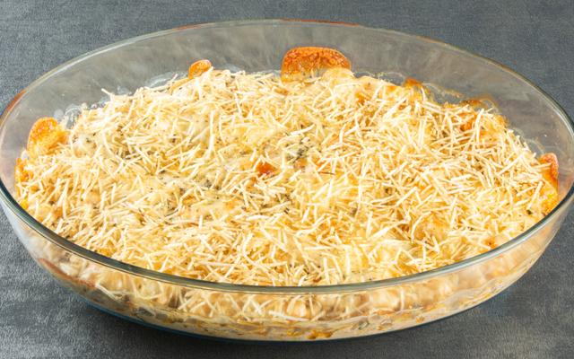

Receitas Deliciosas
Fricassê de Frango
Ingredientes
- 1 lata de creme de leite
- 1 copo de requeijão cremoso
- 2 peitos de frango desfiados
- 100 g de batata palha
- 1 pitada de sal
- 1 lata de milho verde
- 100 g de azeitona sem caroço
- 200 g de mussarela fatiada
- 1 xícara de água
Modo de preparo
- Bata no liquidificador o milho, o requeijão, o creme de leite e a água.
- Refogue o creme do liquidificador com o frango desfiado, as azeitonas e o sal até ficar com uma textura espessa.
- Clioque o refogado numa assadeira, cubra com mussarela e espalhe a batata palha por cima.
- Leve ao forno até borblihar.
- Sirva com arroz branco.
Salpicão
Ingredientes
- 1/2 kg de frango (peito) refogado e desfiado
- 1 lata de milho escorrido
- Palmito picado a gosto
- 200 g de uvas passas
- 100 g de mussarela picada
- 1 lata de creme de leite
- 1 colher (sopa) de maionese
- Tempero a gosto e por último
- 100 g de presunto picado
- 2 maçãs cascada e picada
- 1 vidro de azeitona pequena
- 1 cenoura média ralada
Modo de preparo
- Misture todos os ingredientes.
- Jogar por cima batata palha a gosto.
wrap de frango com requeijão
Ingredientes
- 1 fatia de pão folha
- 1 peito de frango cortado
- Meia cebola pequena picada
- sal e pimenta a gosto
- Folhas de alface
- 1 tomate em rodelas finas
- 2 colheres de sopa de requeijão cremoso
- 2 colheres de sopa de azeite ou óleo
Modo de preparo
- Aqueça levemente a fatia de pão em uma frigideira para que fiquem maleáveis.li
- Em uma panela, frite o frango no azeite.
- Tempere com sal e pimenta.
- Espalhe uma colher de requeijão no pão e outra misture no frango.
- Coloque o frango no pão, algumas folhas de alface e rodelas de tomate.
- Enrole bem firme, dobrando as laterais para formar o wrap.
- Sirva em seguida, ou corte ao meio para deixar mais prático.
- Sirva-se à vontade!